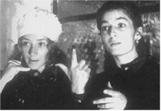

48th Berlin International
Film Festival (1998)
feature by Eddie
Cockrell
The F-Word
Day ten (20 February) at the Berlinale is overcast,
but the temperature is still expected to top out at about 50 degrees Fahrenheit
– extremely unusual for this time of year. As a result, journalists and other
fest-goers used to layering for maximum protection as they scurry from cinema to
cine-center to press headquarters now look like walking coat racks, with sweaters, jackets
and coats draped over arms and shoulders along with the de rigeur overstuffed briefcase or
gimme bag (this year's favorite seems to be the nifty number from Holland Film).
And those looked to be the two top stories for the first few days of the festival, as
everybody seemed to be collectively holding their breath for something to happen and a
movie or guest to jump forward and set a tone.  No one picture or star
has done that, but the quality of films has risen dramatically since say about Tuesday (17
February), when French master Alain Resnais' whimsical On connait la chanson (Same Old Song) charmed audiences here and
provided some much-needed laughs in a field crowded largely with more somber fare.
Dedicated to the late Dennis Potter ("The Singing Detective"), the film takes a
page from his work by inserting chunks of French popular songs in the mouths of some
befuddled Parisians pursuing love. Resnais, who is on the strength of the film a very
energetic 75, couldn't attend due to some tests being run in a French hospital, but fest
topper Moritz de Hadeln had flowers sent to his room ("Apparently," de Hadeln
told the Moving Pictures daily fest magazine, "he was surprised to get such good
treatment for not attending the festival that he was curious what he would get if he
actually attended."). A standing ovation, certainly, and perhaps a Bear award of some
sort...?
No one picture or star
has done that, but the quality of films has risen dramatically since say about Tuesday (17
February), when French master Alain Resnais' whimsical On connait la chanson (Same Old Song) charmed audiences here and
provided some much-needed laughs in a field crowded largely with more somber fare.
Dedicated to the late Dennis Potter ("The Singing Detective"), the film takes a
page from his work by inserting chunks of French popular songs in the mouths of some
befuddled Parisians pursuing love. Resnais, who is on the strength of the film a very
energetic 75, couldn't attend due to some tests being run in a French hospital, but fest
topper Moritz de Hadeln had flowers sent to his room ("Apparently," de Hadeln
told the Moving Pictures daily fest magazine, "he was surprised to get such good
treatment for not attending the festival that he was curious what he would get if he
actually attended."). A standing ovation, certainly, and perhaps a Bear award of some
sort...?
Film acquisition for the American market has taken an interesting turn, as
the news that Miramax had bought the currently hot picture Comedian Harmonists and
was in negotiations to buy the Oscar-nominated Beyond Silence (both from Germany)
has been overshadowed by yesterday's news that a new company, Stratosphere Entertainment,
has apparently outbid Sony Pictures Classics for U.S. rights to the Russian film The
Thief, which along with Beyond Silence is one of the five finalists for this
year's Best Foreign Film Oscar. Should all this come to pass, only the Spanish entry, Secretos
del Corazon (Secrets of the Heart), would be the only picture in the category
without a U.S. distributor (which, of course, doesn't always equal a release).
While all journalist's eyes are on tomorrow's press conference schedule, which is now
supposed to include a visit by Robert De Niro to promote the competition entry  Wag the Dog (he's also in Jackie Brown and Great
Expectations here, making it a true triple threat), it'll be hard to top Samuel L.
Jackson's quote from Tuesday's press conference for Quentin Tarantino's Jackie Brown.
The actor had this to say when asked about director Spike Lee's objections to the abundant
use of "the n-word" in the film: "Spike Lee won a landslide majority in the
election to be spokesperson for our race – but I didn't vote for him. It's not our
problem, it's a Spike Lee problem. If you look at Jackie Brown it's a pretty good
black film. Now I don't think Spike's done one of those in a couple of years." Now that's
entertainment; think they'll be working together any time soon?
Wag the Dog (he's also in Jackie Brown and Great
Expectations here, making it a true triple threat), it'll be hard to top Samuel L.
Jackson's quote from Tuesday's press conference for Quentin Tarantino's Jackie Brown.
The actor had this to say when asked about director Spike Lee's objections to the abundant
use of "the n-word" in the film: "Spike Lee won a landslide majority in the
election to be spokesperson for our race – but I didn't vote for him. It's not our
problem, it's a Spike Lee problem. If you look at Jackie Brown it's a pretty good
black film. Now I don't think Spike's done one of those in a couple of years." Now that's
entertainment; think they'll be working together any time soon?
The 48th Berlin International Film Festival continues through Sunday (22 February).
Future reports will recap the festival, summarize the major competition prizes and offer
capsule reviews of f-words caught in various sections of the program